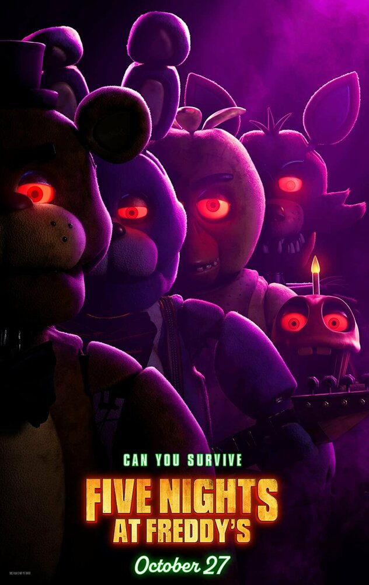
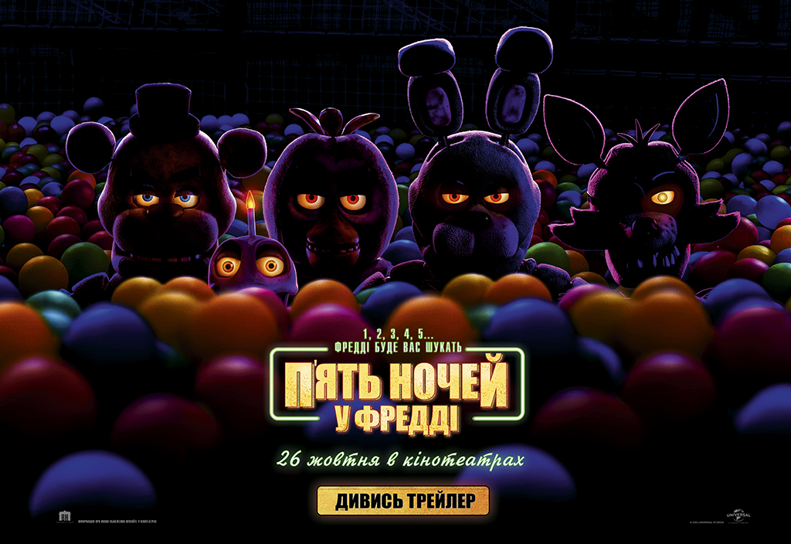

Головний герой гри Майк Шмідт[4], влаштувався на роботу нічним охоронцем в сімейну піцерію «Freddy Fazbear's Pizza», що належить вигаданій компанії «Fazbear Entertainment»[5]. До Майка працював інший охоронець, і саме він залишає голосові повідомлення щоночі (до тих пір, поки його не вб'ють в четверту ніч, після чого в п'яту ніч будуть тільки спотворені звуки), в яких пояснює похмурі таємниці історії піцерії. Він пояснює Майку, що чотири аніматронних персонажа (ведмідь Фредді, заєць Бонні, курка Чіка і лис Фоксі) ночами оживають, аби їх сервоприводи не закисли від довгого простою. Телефоніст (колишній охоронець; або частіше зветься Фон-гай) також пояснює йому, що якщо один з аніматроніків зустріне людину вночі, він подумає, що вона ендоскелет без костюма, і робот «насильно запхне» її в запасний механічний костюм Фредді, що вб'є людину[6].

Протягом всієї гри будуть зустрічатися газетні вирізки та історії з телефонних дзвінків, в яких стає зрозуміло, що репутація ресторану дуже сильно постраждала. Колишній охоронець згадав інцидент «Укус 87-го», в якому аніматронік відкусив дитині лобову частку голови. Вирізки з газет в Східному коридорі свідчать, що в піцерії сталося масове вбивство, яке імовірно відбулося, коли чоловік заманив п'ятьох дітей в задню кімнату і стратив їх. Пізніше в ресторан стали надходити скарги на те, що аніматроніки стали неприємно пахнути та почали виділяти кров та слиз навколо очей та рота. Один з відвідувачів порівняв їх з «ожилими душами», натякаючи, що мертві тіла дітей приховані всередині аніматроніка, і примари померлих володіють ними[7]. Після сьомої ночі Майка Шмідта звільняють за непрофесіоналізм і поганий запах[8].